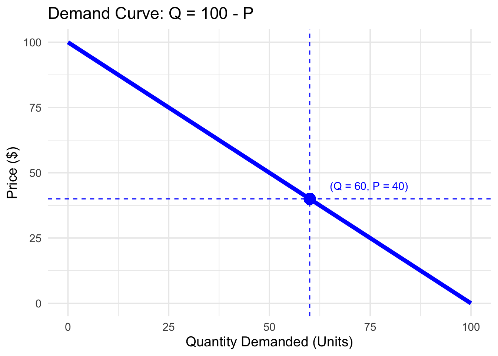

library(ggplot2)
# Create data for the demand curve
demand <- data.frame(
price = seq(0, 100, by = 1)
)
demand$quantity <- 100 - demand$price
# Define the intersection point
price_eq <- 40
quantity_eq <- 100 - price_eq # 60
# set plot dimensions
options(repr.plot.width = 5, repr.plot.height =4)
# Plot
ggplot(demand, aes(x = quantity, y = price)) +
geom_line(color = "blue", linewidth = 2) +
geom_hline(yintercept = price_eq, linetype = "dashed", color = "blue") +
geom_vline(xintercept = quantity_eq, linetype = "dashed", color = "blue") +
geom_point(aes(x = quantity_eq, y = price_eq), color = "blue", size = 5) +
annotate("text", x = quantity_eq + 5, y = price_eq + 5,
label = "(Q = 60, P = 40)", color = "blue", hjust = 0) +
labs(
title = "Demand Curve: Q = 100 - P",
x = "Quantity Demanded (Units)",
y = "Price ($)"
) +
theme_minimal(base_size = 14)Warning in geom_point(aes(x = quantity_eq, y = price_eq), color = "blue", : All aesthetics have length 1, but the data has 101 rows.
ℹ Please consider using `annotate()` or provide this layer with data containing
a single row.